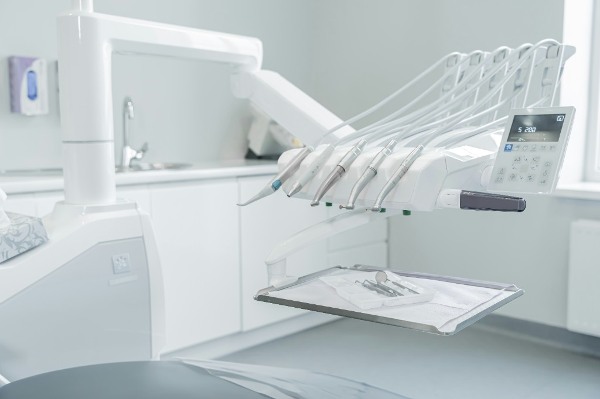
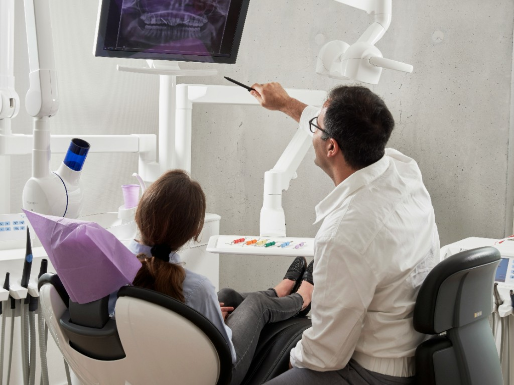

01
根管治療（神経の治療）
細い根管の奥や分岐部を顕微鏡で確認。見逃しのない清掃・充填で、抜歯回避の可能性を高めます。

口腔外科・有病者歯科・インプラント・訪問診療
マイクロスコープ精密治療
顕微鏡（マイクロスコープ）を使った治療の特徴は、肉眼では見えないほど小さな虫歯を初期段階で発見できること、暗く狭い根管部分も明るく拡大できることです。当院では難しい症例ほど顕微鏡の視野を頼り、保険・自費を問わず精密な処置を行います。
他院で「抜歯しかない」と言われた方、何度も同じ歯を治療された方、説明を丁寧に聞きたい方——マイクロスコープは、そうした方の選択肢を広げる技術でもあります。
当院の取り組み
説明だけでは伝わりにくい治療の精密さ・丁寧さを、当院では可視化しています。
当院は、すべての診療に真剣に、全力で取り組んでいます。

拡大しない診療と、マイクロスコープ診療では判断できる範囲がまったく異なります

CONVENTIONAL
初期の虫歯や根管の分岐は見落とされやすく、結果的に多く削る・抜歯につながることも。
MICROSCOPE
最大20倍以上の拡大。病変を早期に発見し、必要最小限の処置で歯を残す方向へ。
川越・鶴ヶ島・坂戸エリアの患者さまに、口腔外科を中心とした専門的な歯科医療を提供しています。
顕微鏡歯科の領域を中心に、当院が力を入れている精密治療です。スワイプしてご覧ください。
細い根管の奥や分岐部を顕微鏡で確認。見逃しのない清掃・充填で、抜歯回避の可能性を高めます。

レントゲンでも写りにくい小さな虫歯を、拡大視野で発見。削る量を抑え、歯の寿命を延ばします。

顕微鏡の映像を記録し、患者さまの目の前で「どこを、なぜ治すか」を共有。不安を減らす透明な医療です。
他院で完治しなかった歯、複雑な根管形態にも対応。県外からご来院いただく症例も少なくありません。

当院ではクラスB滅菌器をはじめとする世界基準の滅菌設備を導入しています。それ以上に大切なのは、「当たり前のことを、しっかりと行うこと」だと考えています。
衛生管理——当たり前のことを、確実に。どうぞ安心してご来院ください。
 滅菌・衛生管理を徹底した診療室
滅菌・衛生管理を徹底した診療室
 清潔で落ち着いた院内
清潔で落ち着いた院内
院長紹介
医療法人 井上歯科医院 川越歯科口腔外科クリニック 院長
日本口腔外科学会認定の口腔外科専門医。明海大学歯学部卒業後、顎顔面外科学分野で研鑽を積み、マイクロスコープ治療の指導者としても活動しています。顕微鏡の映像を共有しながら、納得いただいたうえで治療を進めることを大切にしています。
口腔外科専門医を中心に、複数の歯科医師が診療にあたっています。
院長
口腔外科専門医／明海大学歯学部 卒業
副院長
口腔外科専門医／明海大学歯学部 卒業
医師
明海大学歯学部 卒業
医師
明海大学歯学部 卒業
医師
明海大学歯学部 卒業／矯正担当
理事長：井上 勝美（明海大学歯学部 卒業）

医療法人 井上歯科医院 川越歯科口腔外科クリニックは、地域の患者さまのお口の健康を支えています。口腔外科・有病者歯科・インプラント・訪問診療を柱に、マイクロスコープによる精密治療を日常の標準として提供しています。
| 時間 | 月 | 火 | 水 | 木 | 金 | 土 | 日祝 |
|---|---|---|---|---|---|---|---|
| 午前9:00–12:30 | ○ | ○ | ○ | 休 | ○ | ○ | 休 |
| 午後14:00–18:30 | ○ | ○ | ○ | 休 | ○ | — | 休 |
| 午後14:00–18:00 | — | — | — | — | — | ○ | — |
休診：木曜・日曜・祝日 ／ 土曜午後は18:00まで ／ 昼休み 12:30–14:00
当院は予約制で診療時間を確保しております。ご予約の変更・キャンセルは前日の診療終了時間まで（休診日の場合はその前日まで）にお電話にてご連絡ください。
ご予約当日のキャンセル・無断キャンセルの場合、キャンセル料として3,300円（税込）を頂戴いたします。15分以上の遅刻の場合は、ご予約の取り直しをお願いする場合がございます。
※祝日の休診有無はお電話にてご確認ください。表示の診療状況バナーはデモ用の自動表示です。